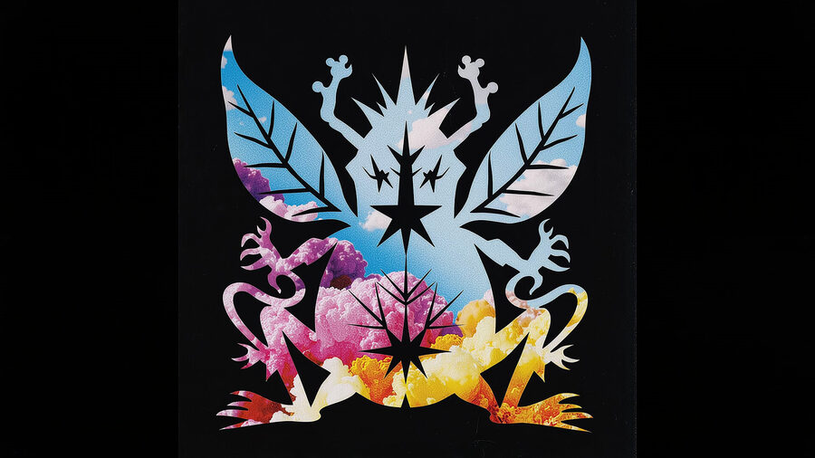
Exhibition Proposal for CVPR 2026
ScrollFor the exhibition, we propose presenting a mini-series of 3 × 3 avatars of Macskusz, a mythical creature. In the video above, Macskusz appears in the form of an aphid, the form it took on January 2, 2026, when it called itself "Kis Kobaltcsilag". The avatars will be automatically regenerated three times per day on the 5th, 6th, and 7th of June, based on what is happening in the world on that day.
For the presentation, we require a screen displaying our website, where the current image will be shown in a repeating loop: the newly generated avatar appears, remains visible for a few minutes, and then comes to life in a short animation of about ten seconds before the cycle begins again. Loudspeakers to play the sounds accompanying the animation could be nice but are not necessary.
The creature called Macskusz emerged from the love language between Vero and Max and gradually took on a life of its own. It functions both as a mascot and as a form of documentation of their relationship, attempting to capture the experiences and moods of each day by allowing them to manifest, day after day, in a new entity.
Originally, Macskusz was a nickname that Vero invented for Max. The name combines the Hungarian word macska (cat) with the Latin suffix -us. The first illustration of Macskusz was created around All Saints' Day, as a paper cutout.
At the time, Vero had developed a strong interest in the Mexican craft tradition of papel picado, which shaped the first form the creature would take.
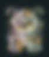
The original Macskusz
This first Macskusz was followed by a series of cutouts made from magazine scraps. Each day, new figures were pasted into a special book that Vero had crafted for this purpose.
The individual Macskusz avatars, or "names," reflect different aspects of Max and Vero's relationship: shared experiences, arguments, and images drawn from the media they consumed together.
Over time, the avatars quickly drifted away from the original feline form. In some cases they are no longer creatures at all, but rather resemble personified natural forces or locations. Nevertheless, they remain clearly identifiable with specific events, such as baking a rainbow cake with Smarties, rescuing a hedgehog, or visiting Max's hometown of Ettenheim in Germany.
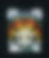
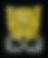
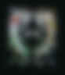
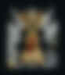
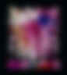
Selected paper-cut avatars from the book series
The paper-cut series was still limited to the pages of the book. Although the project concluded with image no. 76 after that initial run, it was revived in 2025 when Max proposed recreating the project algorithmically using AI.
To do so, we first scanned the whole physical book in high resolution and used low-rank adaptation fine-tuning to create a FLUX.1-dev image-generation model that outputs the precise style of the original paper cuts. Below you can see the way in which the model's outputs came to resemble the originals during training.
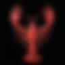
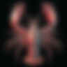
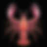
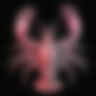
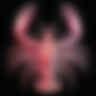
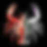
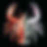
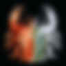
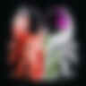
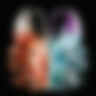
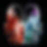
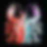
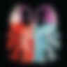
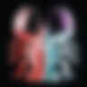
We then built a pipeline. Each day we crawl the main news sites that Vero and Max read every morning. We then have an LLM simulate how we would have likely discussed the news items we would have found most interesting, based on an internal summary of our personalities.
Finally, the LLM comes up with a single targeted prompt for the image model to illustrate the essence of our day as we react to what's happening in the world. We create the image and then use it as the basis of an additional generation using Google's Veo 3.1 video model, so that the image of the day is first statically displayed and then suddenly jumps away, scuttles into the bushes, or takes flight.
Workflow
Macskusz's "thousand names" were originally only a metaphor for its endless variability. With the revival of the project through artificial intelligence, we also began experimenting with having the model give literary names to each creation.
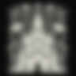
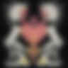
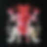
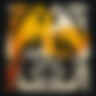
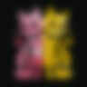
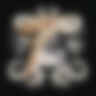
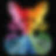
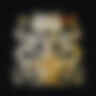
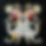
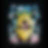
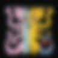
In the current computer-based workflow, the new avatars are shaped less by personally experienced moments and more by daily news and predefined aesthetic principles. They condense a wider diversity of information and thus become symbols of contemporary historical moments in a global context, which nevertheless still shape our everyday lives.
Veronika Szücs
Veronika Szücs was born in Hungary and studied art history and Indology in Budapest, contextual painting at the Academy of Fine Arts Vienna, and comic and illustration at the Accademia di Belle Arti di Bologna.
She completed her studies with a graphic novel, a feminist adaptation of the classical Indian story Nala and Damayanti (2019). She works on art books and comic projects including Andersrum (2020), Zurück in die Zukunft (2023), and Cupcake & Bejgli (with Zsofi Pinter, 2025).
Maximilian Noichl
Max Noichl is a philosopher of science. He works on the application of computational and AI methods in philosophy and is currently doing a PhD in philosophy at Utrecht University.
Previous works include a large, data-driven map of philosophy and an AI-illustrated accidental philosophical haiku project, and other computational projects across philosophy and art.
We met in 2015 during our philosophy studies in Vienna and now live and work together in Bamberg, Germany.
Thank you very much for taking the time to read our proposal and for considering our submission for the Art Exhibition at CVPR 2026 in Denver.
See you soon,
Vero & Max
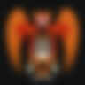